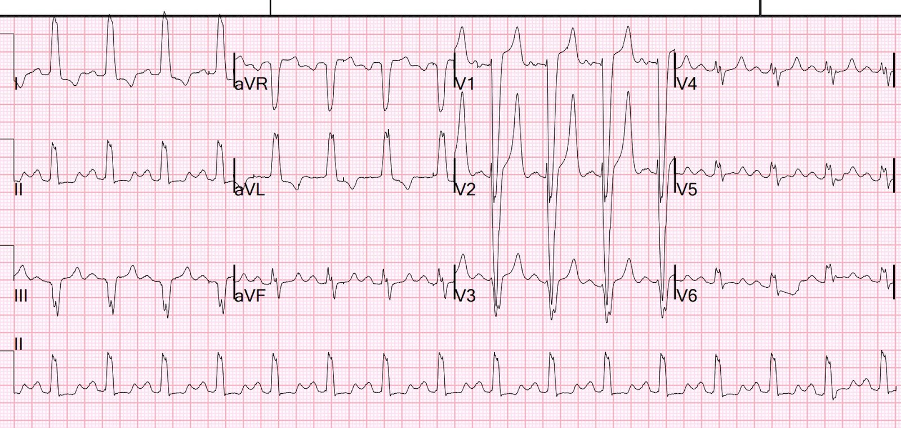
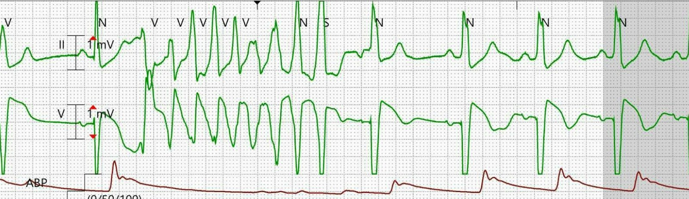
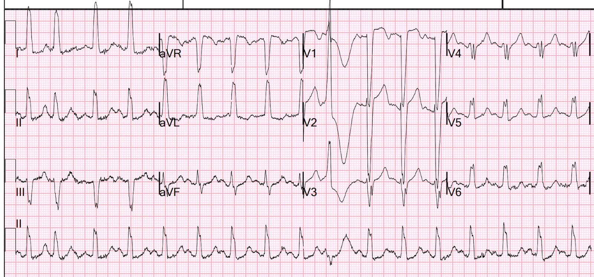
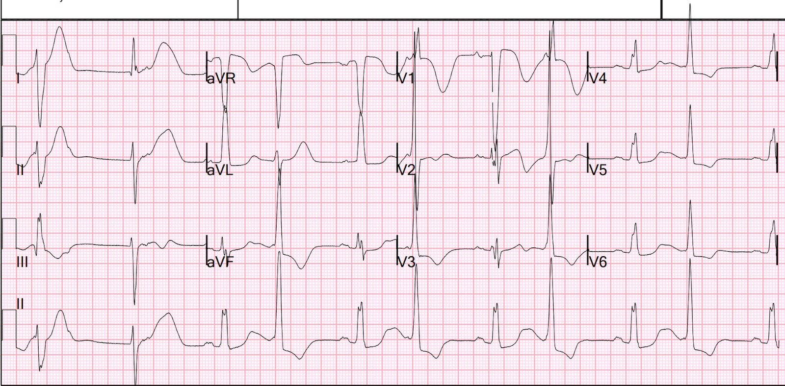
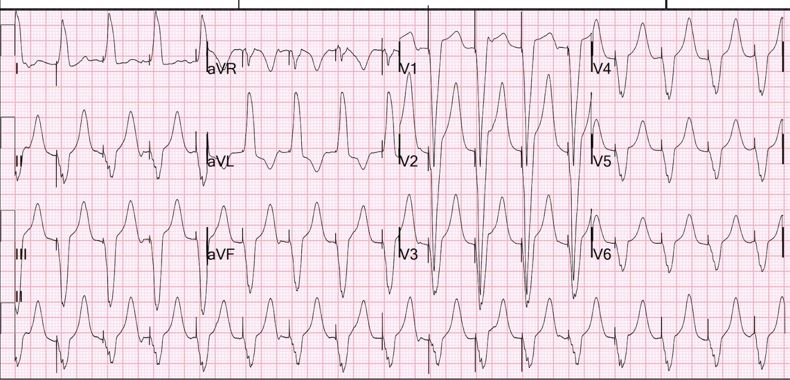
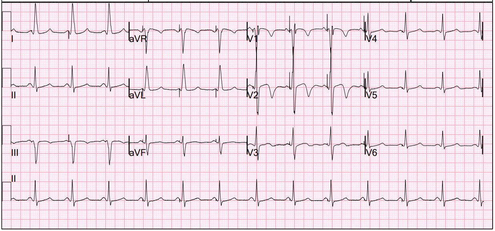
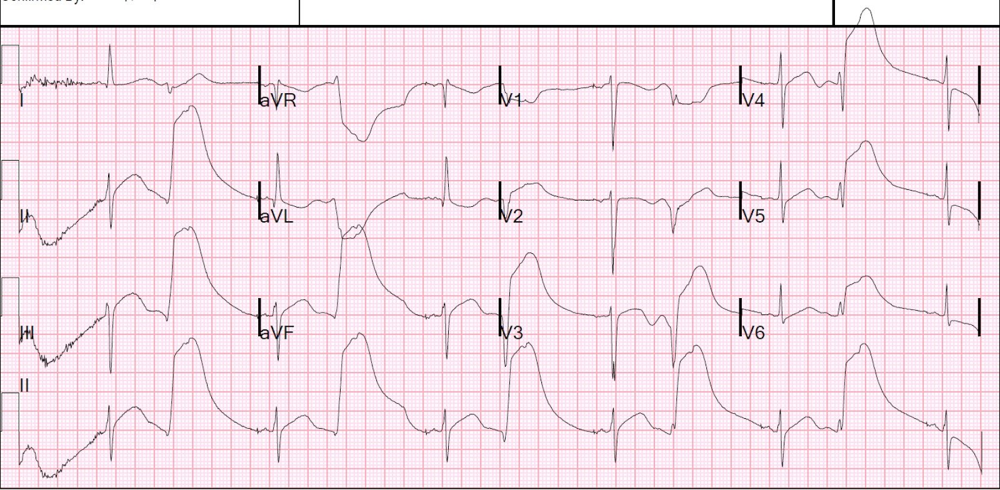
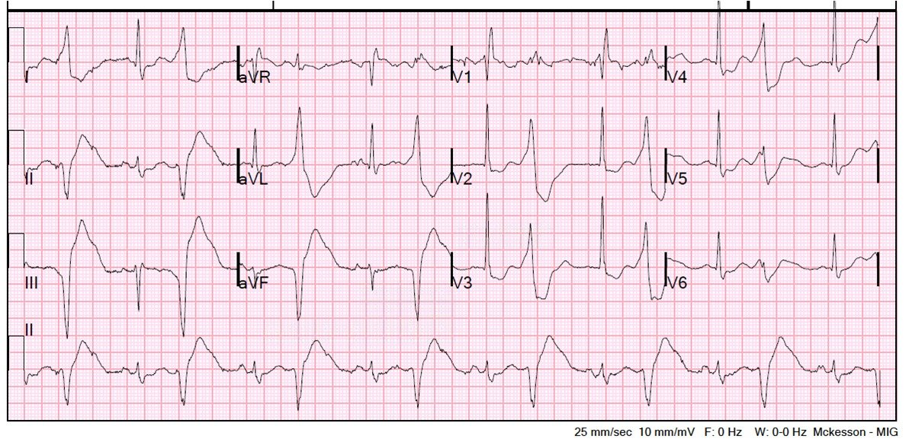
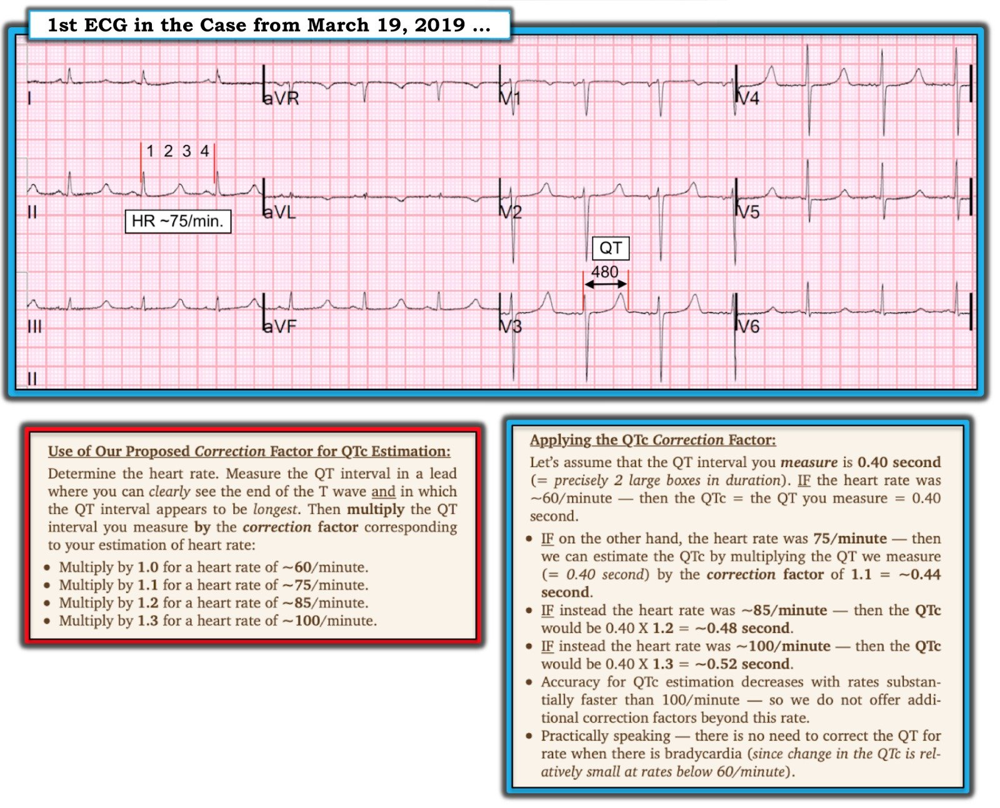

02/01/2025 — Xoắn đỉnh ở bệnh nhân blốc nhánh trái: có QT dài không? (Và: tạo nhịp vùng nhánh trái)
Bản dịch tiếng Việt của bài "Torsade in a patient with left bundle branch block: is there a long QT? (And: Left Bundle Pacing)." – Dr. Smith’s ECG Blog. Giữ nguyên toàn bộ 10 hình ảnh của bản gốc.
Bài của Smith, kèm bình luận của bác sĩ điện sinh lý của chúng tôi, Rehan Karim. (Và dĩ nhiên có bình luận của Ken ở cuối bài)
Một phụ nữ lớn tuổi béo phì, có bệnh cơ tim, blốc nhánh trái (LBBB) và tăng thán khí máu mạn tính, nhập viện trong tình trạng giảm oxy máu kèm rối loạn ý thức.
Bệnh nhân được đặt nội khí quản.
Siêu âm tim tại giường cho thấy chức năng thất trái giảm mức độ vừa.
CT ngực không thấy thuyên tắc phổi nhưng có thâm nhiễm hai đáy phổi.
Bệnh nhân được điều trị nhiễm khuẩn huyết bằng kháng sinh, trong đó có azithromycin; có tụt huyết áp, được đặt đường động mạch, đường truyền tĩnh mạch trung tâm và dùng thuốc vận mạch.
Bệnh nhân được ghi một điện tâm đồ:


Đây là blốc nhánh trái (LBBB), với mức ngược hướng tương xứng (proportional discordance) phù hợp. Sóng T khá cao và có thể nhọn (tăng kali máu?), nhưng kết quả kali trả về bình thường. Tôi không thấy OMI ở đây và mọi giá trị troponin chỉ tăng tối thiểu, phù hợp với tổn thương mạn tính do bệnh cơ tim hoặc tổn thương cấp do nhiễm khuẩn huyết.
Khoảng QT là bao nhiêu?
Trong LBBB, khoảng QT bị kéo dài một phần do QRS rộng. QRS bình thường khoảng 100 ms, và một LBBB điển hình là 150 ms. Do đó, 50 ms được cộng thêm vào khoảng QT ngay cả khi tái cực không kéo dài. Vì vậy, cách tốt nhất để đo xem có kéo dài hay không ở từng cá thể là đo sự thay đổi của khoảng JT hoặc khoảng từ đỉnh T đến cuối T (T-peak to T-end) (1, 2).
Tuy nhiên, để hiệu chỉnh theo tần số, ta cần khoảng QT đầy đủ. Bogossian và cs. (1) đã chỉ ra rằng có thể tạo ra một QT cải biên (modified QT) bằng công thức sau:
QT cải biên = QT đo được – 0.485 x thời gian QRS đo được.
Sau đó ta có thể hiệu chỉnh QT cải biên đó theo tần số tim.
Ở đây QT = 440 ms. QRS = 160 ms. Vậy QT cải biên = 365 ms. Khi đó QTc cải biên ở tần số tim 98, dùng công thức Hodges, là 432 ms (theo Bazett là 466 ms)
Dù sao đi nữa, QT có vẻ không kéo dài, hoặc ít nhất là không kéo dài nhiều.
1. Bogossian H, Frommeyer G, Ninios I, Hasan F, Nguyen QS, Karosiene Z, Mijic D, Kloppe A, Suleiman H, Bandorski D, và cs. New formula for evaluation of the QT interval in patients with left bundle branch block. Heart Rhythm [Internet]. 2014;11:2273–2277. Truy cập tại: https://www.sciencedirect.com/science/article/pii/S1547527114009151
2. Dodd KW, Elm KD, Dodd EM, Smith SW. Among patients with left bundle branch block, T-wave peak to T-wave end time is prolonged in the presence of acute coronary occlusion. Int. J. Cardiol. [Internet]. 2017;236:1–4. Truy cập tại: http://dx.doi.org/10.1016/j.ijcard.2017.01.064
Công cụ tính QT trực tuyến cho QRS rộng (LBBB, RBBB, v.v.)
(Công cụ này do Arron Pearce tạo ra (https://x.com/arron_pearce_)
Bình luận của bác sĩ điện sinh lý của chúng tôi, Dr. Karim:
“Tầm quan trọng của việc đo chính xác khoảng QT không bao giờ là quá mức. Dr. Smith đã đưa ra một bản tổng quan xuất sắc về cách đo và hiệu chỉnh khoảng QT trong những tình huống thời gian QRS kéo dài (ví dụ: LBBB, tạo nhịp thất, v.v.).”
CA BỆNH TIẾP DIỄN
Bệnh nhân được nhập khoa hồi sức tích cực (ICU).
Vào giữa đêm, một “báo động ngừng tim” (code) được phát ra, và nhiều nhịp như thế này đã được ghi lại. Có những đợt ép tim ngắn, nhưng nhịp không tưới máu chỉ xuất hiện từng lúc. Trong lúc ngừng tim, bệnh nhân được dùng amiodarone.
Đây là một trong các dải nhịp


Đây rõ ràng là VT đa dạng và nhiều khả năng là xoắn đỉnh (torsade de pointes)
Các điện tâm đồ sau đó.


LBBB; QT = 440, QRS = 135 ms
QT cải biên = QT đo được – 0.485 x thời gian QRS đo được.
Sau đó ta có thể hiệu chỉnh QT cải biên đó theo tần số tim.
QT cải biên = 440 – 65 = 375 ms.
Hiệu chỉnh theo tần số 100:
Bazett = 484 ms
Hodges = 445 ms
Fridericia = 445 ms
Vậy điện tâm đồ này có QT dài ở mức giới hạn
Một điện tâm đồ khác được ghi:


Đây là điện tâm đồ kinh điển ở bệnh nhân có nguy cơ xoắn đỉnh.
Có nhịp đôi thất với sóng T rộng, hình dạng kỳ dị
Xem các ca còn ấn tượng hơn nữa về hiện tượng này ở cuối bài.
Kế hoạch:
1. Ngừng mọi thuốc giảm tần số tim (negative chronotropic), vì nguy cơ xoắn đỉnh cao hơn nhiều khi có nhịp chậm hoặc khoảng ngưng.
Xem bài này: How a pause can cause cardiac arrest (Một khoảng ngưng có thể gây ngừng tim như thế nào)
2. Đặt máy tạo nhịp tạm thời
3. Ngừng amiodarone, vì thuốc này làm kéo dài QT
4. Thay vào đó dùng lidocaine (lidocaine ngăn các PVC gây ra hiện tượng R trên T, và không làm kéo dài QT.)
5. Ngừng mọi thuốc làm kéo dài QT, kể cả azithromycin
6. Cuối cùng, chụp mạch vành
Một lựa chọn có thể thay cho tạo nhịp là dùng thuốc chủ vận beta-1 để tăng tần số tim. Thuốc kinh điển là isoproterenol, nhưng hiện nay khó tìm. Dobutamine là một lựa chọn thay thế chấp nhận được.
Bình luận về thuốc chủ vận beta, của Dr. Karim, bác sĩ điện sinh lý của chúng tôi:
“Khi khoảng QT kéo dài gây xoắn đỉnh, ngoài việc điều chỉnh các rối loạn điện giải như hạ kali máu và hạ magnesi máu, tăng tần số tim có thể ức chế (hay tạo nhịp vượt tần số) các ổ ngoại vị thất. Như Dr. Smith đã nêu, có thể thực hiện điều này bằng thuốc chủ vận beta một hoặc tạo nhịp tạm thời qua đường tĩnh mạch. Cần lưu ý rằng đôi khi thuốc chủ vận beta một có thể làm tăng ngoại vị thất – ví dụ trong thiếu máu cục bộ cơ tim nặng (do làm tăng nhu cầu cơ tim), hoặc đôi khi trong hội chứng QT dài bẩm sinh. Vì vậy, tôi thường ưu tiên tạo nhịp tạm thời, vốn có thể kiểm soát tốt hơn và dễ dự đoán hơn.”
Để ổn định bệnh nhân, một máy tạo nhịp tạm thời đã được đặt và bệnh nhân được tạo nhịp vượt tần số (overdrive pacing) (tạo nhịp vượt tần số ngăn mọi khoảng ngưng, vốn là nền tảng cho xoắn đỉnh):


Nhịp tạo nhịp thất: Ở đây có QT dài không?
Đây là nhịp tạo nhịp, và công thức QT cải biên cho nhịp này giống như cho LBBB.
QT đo được = 500 ms
Thời gian QRS là 160 ms
QT cải biên = 500 – (0.485 x 160) = 422 ms
Tần số tim = 100
Hiệu chỉnh theo tần số tim:
QTc = 545 ms theo hiệu chỉnh Bazett
QTc = 492 ms theo hiệu chỉnh Hodges
QTc = 500 ms theo hiệu chỉnh Fridericia
QTc quả thật khá dài!!
Chụp mạch vành
Không có bệnh tắc nghẽn đáng kể trên chụp mạch.
Siêu âm tim:
Giảm chức năng tâm thu thất trái - mức độ nặng.
Phân suất tống máu thất trái ước tính là 25%.
Rối loạn vận động thành khu trú - vách trước và mỏm, vô động.
Vận động vách liên thất mất đồng bộ, do LBBB/nhịp tạo nhịp.
Đặt máy tạo nhịp vĩnh viễn
Sau đó, bệnh nhân được đặt máy tạo nhịp hai buồng thất để “điều trị tái đồng bộ tim (Cardiac Resynchronization Therapy, CRT)” (Biện pháp này được chỉ định cho bệnh nhân có LBBB, thời gian QRS > 130 ms và suy tim, và cải thiện suy tim rất nhiều). Thường được thực hiện bằng một dây điện cực đặt qua xoang vành (hệ tĩnh mạch thất trái). Xem thêm suy nghĩ của Dr. Karim về vấn đề này bên dưới.
Trong ca này, phương pháp được dùng là tạo nhịp vùng nhánh trái (Left Bundle Branch area pacing, LBB area pacing). Dr. Karim giải thích cách thực hiện: “Chúng tôi bắt được nhánh trái (hoặc một phần của nó) bằng cách đặt dây điện cực sâu vào vách liên thất, nơi có nhánh hoặc phân nhánh (đặc biệt là phân nhánh sau). “
Tôi hỏi liệu việc này có cần đâm xuyên vách bằng kim không, và anh ấy trả lời:
“Không, chủ yếu đó là sự kết hợp giữa vị trí giải phẫu với hình dạng của tạo nhịp vách trên điện tâm đồ 12 chuyển đạo, rồi phân tích điện đồ tại chỗ trong buồng tim để tìm tín hiệu nhánh trái / phân nhánh và trở kháng của dây điện cực. Vách được “chọc thủng” bằng vít cố định chủ động của dây điện cực – về bản chất là ta khoan vào vách bằng vòng xoắn của vít.”
Vì bệnh nhân có bệnh cơ tim và rối loạn nhịp thất, máy tạo nhịp được tích hợp máy khử rung tim cấy được (ICD)
Siêu âm tim 6 ngày sau CRT:
Phân suất tống máu thất trái ước tính bình thường .
Không có rối loạn vận động thành .
Phân suất tống máu thất trái ước tính là 55-60%
Với tôi điều này gần như kỳ diệu; tôi không nghĩ mức cải thiện như vậy là thường gặp.
Điện tâm đồ với tạo nhịp CRT hai buồng thất qua nhánh trái:


QRS giờ hẹp hơn nhiều, và khoảng QT giờ cũng ngắn hơn nhiều so với trước.
Suy nghĩ cuối cùng của Dr. Karim:
Vì bệnh nhân này đã được biết trước có rối loạn chức năng thất trái / bệnh cơ tim, kèm LBBB, và chúng tôi rất nghi ngờ bệnh nhân có bệnh kênh ion nền (do chỉ một liều thuốc làm kéo dài QT đã gây ra biểu hiện lâm sàng nặng nề như vậy với rối loạn nhịp thất mất ổn định huyết động; dự kiến sẽ trao đổi về xét nghiệm di truyền khi khám ngoại trú), nên đã quyết định tiến hành tái đồng bộ tim. Trong ca cụ thể này, tạo nhịp vùng nhánh trái (LBB area pacing) được thực hiện để đạt tái đồng bộ tim. Điện tâm đồ với các phức bộ tạo nhịp trình bày bên dưới cho thấy phức bộ QRS hẹp hơn nhiều, và siêu âm tim cho thấy chức năng tâm thu thất trái cải thiện, chủ yếu nhờ cải thiện tình trạng mất đồng bộ thất trái. (J Am Coll Cardiol. 2019 Dec, 74 (24) 3039–3049) https://doi.org/10.1016/j.jacc.2019.10.039
Ví dụ về các điện tâm đồ kỳ dị dẫn tới xoắn đỉnh
Hội chứng QT dài với VT đa dạng tái phát liên tục: Xử trí


Nhịp nhanh thất đa dạng



===================================
BÌNH LUẬN CỦA TÔI, bởi KEN GRAUER, MD (2/1/2025):
===================================
Ca hôm nay làm nổi bật một số khái niệm quan trọng cần áp dụng khi đánh giá QTc (khoảng QT hiệu chỉnh – corrected QT interval) ở bệnh nhân có QRS kéo dài trên điện tâm đồ nền. Tôi xin bổ sung những suy nghĩ sau vào phần bàn luận sâu sắc ở trên của Dr. Smith.
- Đánh giá QTc khác đi khi phức bộ QRS rộng — dù là do BBB (blốc nhánh – Bundle Branch Block) có từ trước hay do tạo nhịp tim.
- Dr. Smith đưa ra một hệ số hiệu chỉnh định lượng, tính đến mức mà QRS giãn rộng do rối loạn dẫn truyền dự kiến sẽ cộng thêm vào kết quả tính QTc.
- Để cho đơn giản — tôi đề xuất rằng trong bối cảnh cấp cứu, điều quan trọng nhất tôi muốn biết là xác định định tính QTc của bệnh nhân trước mặt mình (tức là, QTc bình thường — ở mức giới hạn — hay tăng — và nếu QTc tăng, thì nhiều khả năng chỉ tăng tối thiểu hay tăng nhiều hơn thế). Trên thực tế — việc xác định chính xác bằng con số (định lượng) QTc ít quan trọng hơn đối với xử trí ban đầu trong bối cảnh cấp cứu.
- Đo QTc chính xác hơn trở nên quan trọng trong những trường hợp ta cần theo dõi liên tiếp một bệnh nhân cụ thể, như khi can thiệp của ta có yếu tố có thể làm tăng thêm QTc nền của bệnh nhân (tức là, dùng một thuốc có thể kéo dài QTc — hoặc tình trạng hạ K+ hay hạ Mg++ nặng lên).
- Miễn là ta nhất quán với phương pháp dùng để đo QTc — ta sẽ biết được QTc có đang tăng thêm hay không (tức là, bất kể QTc ban đầu của bệnh nhân là 480 hay 520 msec — ta vẫn sẽ nhận ra được QTc có đang dài ra hay không).
- Cần nhớ rằng 3 phương pháp khác nhau mà Dr. Smith nêu trong phần bàn luận (tức là, các công thức hiệu chỉnh Bazett, Hodges và Fridericia) — cho ra chênh lệch ~10% trong QTc dự đoán. Điều này cho thấy sự đồng thuận chung về ước tính QTc chưa hoàn hảo. Về lâm sàng, nên nhớ rằng mức chênh lệch này trong ước tính QTc lớn hơn ở tần số tim nhanh hơn (mà tần số tim nhanh lại thường gặp ở những bệnh nhân “nặng hơn”, chính là những người ta cần đánh giá QTc nhất).
- ĐIỀU CỐT LÕI: Theo Dr. Smith — điểm MẤU CHỐT trong ca hôm nay là: trong khi QTc ở điện tâm đồ ban đầu không kéo dài hơn mức tối thiểu (nếu có kéo dài) (điện tâm đồ này cho thấy nhịp nhanh xoang với LBBB và những sóng T cao nhọn kia) — thì QTc ở điện tâm đồ ghi sau đó, khi tạo nhịp thất vượt tần số bằng máy tạo nhịp tạm thời, rõ ràng đã trở nên “khá dài!” (tức là, trong khoảng 492 đến 545 msec, tùy công thức hiệu chỉnh được chọn).
- Như Dr. Smith và Dr. Karim đã mô tả ở trên — tạo nhịp trong ca hôm nay là một can thiệp hiệu quả — vì nó ngăn nhịp chậm và các khoảng ngưng vốn dễ khởi phát thêm các cơn xoắn đỉnh (Torsades de Pointes). (Để biết thêm về xoắn đỉnh so với nhịp nhanh thất đa dạng (PMVT) — xem Bình luận của tôi trong bài ngày 18 tháng Mười năm 2023 và bài ngày 2 tháng Chín năm 2024 trên Dr. Smith’s ECG Blog).
- LƯU Ý: Một đường link tiện lợi mà tôi ưa dùng để hiệu chỉnh gần như tức thì QT đo được theo tần số tim (ít nhất là trong những trường hợp thời gian QRS bình thường) = MD CALC — công cụ cho phép tính QTc theo bất kỳ công thức nào trong 5 công thức hiệu chỉnh thông dụng nhất ( = Bazett — Fridericia — Framingham — Hodges — Rautaharju).
Cách tiếp cận của tôi: Đánh giá định tính nhanh …
Dù tôi không tính chính xác QTc cho điện tâm đồ tạo nhịp thất trong ca hôm nay — tôi đã ngay lập tức nhận ra rằng mặc dù có nhịp nhanh ~100 lần/phút — QTc của phức bộ QRS tạo nhịp giãn rộng rõ rệt này vẫn kéo dài đáng kể, vì:
- Khoảng QT đo được trên bản ghi này, xét định tính, trông dài hơn hẳn 2/3 khoảng R-R của bản ghi.
- Ngay cả khi có nhịp nhanh và thời gian QRS tạo nhịp ~0.16 giây — tôi lập tức biết rằng không đời nào mức tăng tương đối này của thời gian QT (so với khoảng R-R) lại là “bình thường”.
2 cách ước lượng nhanh mà tôi dùng:
Như tôi đã bàn trong Bình luận của tôi ở bài ngày 19 tháng Ba năm 2019 trên Dr. Smith’s ECG Blog — 2 phương pháp nhanh để đánh giá nhanh QTc đã giúp ích tốt cho tôi trong hơn 3 thập kỷ qua:
- Khi tần số tim không quá nhanh (phương pháp này kém hiệu quả hơn khi tần số tim >90-100 lần/phút) — tôi ưa dùng Phương pháp “Eyeball” (nhìn bằng mắt) để biết ngay trong nháy mắt QTc có khả năng kéo dài hay không. Với phương pháp này — có thể nghi ngờ QTc dài NẾU khoảng QT dài nhất mà bạn thấy rõ trên bản ghi dài hơn một nửa khoảng R-R.
- Để nhanh chóng ước tính giá trị bằng số của QTc — tôi đã xây dựng một Hệ số Hiệu chỉnh (correction factor) chính xác đến bất ngờ khi tôi đánh giá vô số giá trị QTc mà tôi đã ước tính trong suốt sự nghiệp của mình. Như phần chữ dưới điện tâm đồ ở Hình 1 — bạn chỉ cần nhớ 3 giá trị (tức là, 1.1 cho tần số ~75 lần/phút — 1.2 cho ~85 lần/phút — và 1.3 cho ~100 lần/phút). Chỉ cần luyện tập một chút với phương pháp này — bạn có thể ước tính QTc trong vòng vài giây.
- Áp dụng phương pháp của tôi cho ca ngày 19 tháng Ba năm 2019 mà tôi trình bày ở Hình 1 — nhịp trên điện tâm đồ Hình 1 này đều, với khoảng R-R chỉ dưới 4 ô lớn một chút. Do đó, tần số tim chỉ hơn 75 lần/phút (tức là, 300÷4) một chút.
- Tôi chọn chuyển đạo V3 ở Hình 1, là một trong những chuyển đạo mà ta có thể xác định rõ điểm khởi đầu và điểm kết thúc của khoảng QT. Tôi đo QT ở chuyển đạo này được ~2.4 ô lớn = 480 msec.
- Dùng hệ số hiệu chỉnh 1.1 (vì tần số tim ~75 lần/phút) — tôi ước tính QTc = 480 + [480 X .1 = 48) = 480 + 48 ~528 msec. Để tính nhanh và dễ — tôi thường làm tròn các giá trị (dù sao thì tất cả cũng chỉ là ước tính! ) — nhưng tôi rất thích việc có thể đạt được kết quả rất sát với giá trị QTc do máy tính tính ra bằng phương pháp hệ số hiệu chỉnh đơn giản này.

